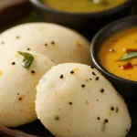

Idli

Idlis are soft and fluffy steamed rice cakes. These idlis combine simple, wholesome ingredients to create a delicious addition to your meals.
Ingredients (yield: 16 idlis)
- 1 cup rice
- 1/2 cup urad dal (split black gram)
- 1/2 tsp fenugreek seeds
- Salt to taste
- Oil for greasing
Steps
Prepare Batter:
- Soak Ingredients:
-
Soak rice, urad dal, and fenugreek seeds in water for at least 4-6 hours or overnight. Drain well.
- Grind Batter:
-
Drain the soaked ingredients and grind them to a smooth batter. Let it ferment overnight.
- Add Salt:
-
Add salt to the batter and mix well.
Steam Idlis:
- Prepare Steamer:
-
Grease idli molds with oil and pour the batter into the molds.
- Steam:
-
Steam for about 15 minutes or until a toothpick inserted comes out clean.